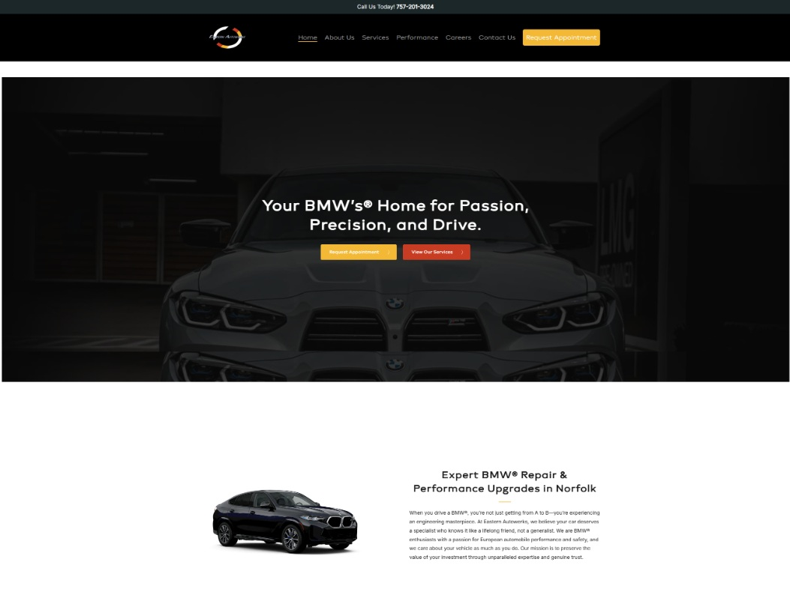

Eastern Autowerks
A full WordPress website for an automotive shop focused on BMW repair, maintenance and performance services in Norfolk, Virginia.

Overview
A full WordPress website for Eastern Autowerks, an automotive shop focused on BMW repair, maintenance and performance services in Norfolk, Virginia.
Site goal
Create a focused service website that immediately communicates BMW specialization while giving visitors clear paths to explore services or request an appointment.
Visual direction
The design uses a predominantly dark palette, automotive imagery and strong contrast to support the performance-focused positioning of the business.
Final experience
My role
I designed and built the website in WordPress, creating the page layouts and responsive presentation around the services and brand direction of the business.
Result
The finished site presents the shop as a BMW specialist rather than a general repair business, with service information and appointment requests reachable from anywhere on the site.